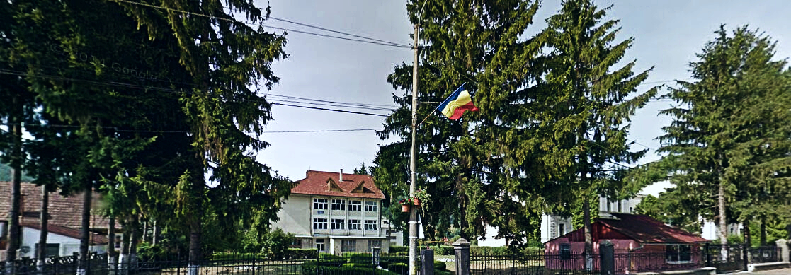

Liceul Nostru

Scurt istoric
Unitatea de învățământ a luat fiinţă în anul 1974 şi a funcţionat ca şcoală generală, în cadrul Liceului „George Coşbuc”. Din 1 iulie 1982, unitatea a funcţionat ca Liceu Industrial, cu profil Silvicultură şi exploatări forestiere. Începând cu 1 septembrie 1991 Liceul Industrial se transformă şi funcţionează ca Grup Şcolar Economic, Administrativ şi de Servicii Năsăud, iar din 1 septembrie 2011 işi schimbă denumirea în Colegiul Economic Năsăud. Începând cu 1 septembrie 2018 unitatea de învățământ funcționează cu numele de Liceul Economic Năsăud
Viziunea noastă
Liceul Economic Năsăud reprezintă locul în care se întrepătrund creativ iniţiativa şi spiritul antreprenorial în scopul formării unor personalităţi active, implicate în comunitate şi piaţa muncii.
Misiunea școlii
Misiunea Liceului Economic Năsăud este formarea absolventului capabil să se adapteze exigenţelor în schimbare ale pieţei muncii, absolvent cu spirit de creativitate și antreprenoriat, bine pregătit profesional în domeniul serviciilor şi cel informatic.
Liceul Economic Năsăud oferă locuitorilor din judeţul Bistriţa-Năsăud şi din Regiunea de Nord-Vest a României oportunităţi de educaţie şi instruire, de înaltă calitate, sprijinind în acelaşi timp dezvoltarea carierei, sporirea calităţii vieţii şi prosperitatea economică.
Şcoala noastră oferă şanse egale elevilor prin activități de educație și formare profesională (campanii de informare, orientare și consiliere, concursuri profesionale de competențe, oportunități de carieră), asigurând însuşirea limbajelor necesare integrării sociale şi comunitare prin: comunicare estetică, cunoaşterea limbilor străine, utilizarea calculatorului, dobândirea competenţelor antreprenoriale şi de comportament ale cetăţeanului european.
De asemenea ne propunem îmbunătățirea competențelor și a sistemelor de formare a profesorilor, managerilor, personalului școlii și a personalului de specialitate care își desfășoară activiatatea în sistemul de educație și formare profesională.
Şcoala îşi va atinge țintele strategice ţinând cont de interesele comune ale elevilor, părinţilor, profesorilor şi a comunităţii locale.
Odată definită misiunea şcolii, este foarte important ca în continuare să se realizeze asimilarea ei de către profesori, elevi şi alţi parteneri sociali cu scopul impunerii noastre pe o piaţă competitivă a forţei de muncă. Cu alte cuvinte, ne dorim a fi o alternativă pentru tânărul care printr-o educaţie modernă, va deveni o personalitate integrată total în societate.
În toate activităţile, şcoala promovează calitatea, dezvoltarea creativităţii, responsabilitatea, toleranţa, performanţa, egalitatea şanselor, dialogul şi spiritul de echipă.
Profilul actual al liceului
Instituţia se înscrie în sistemul de învăţământ preuniversitar al judeţului Bistriţa-Năsăud, manifestându-se ca o individualitate bine conturată prin oferta educaţională, prin realizările elevilor liceului şi prin cererea de specialişti, absolvenţi ai şcolii noastre.
În cadrul şcolii, pregătirea elevilor se realizează prin filieră tehnologică, pentru calificarea tehnician în activităţi economice, tehnician în achiziții și contractări și tehnician în turism, precum şi prin filieră teoretică la profilul matematică-informatică.
Liceul Economic Năsăud este ofertantul viabil de formare profesională în domeniile servicii, comerţ, turism şi alimentaţie publică din judeţul Bistriţa-Năsăud.